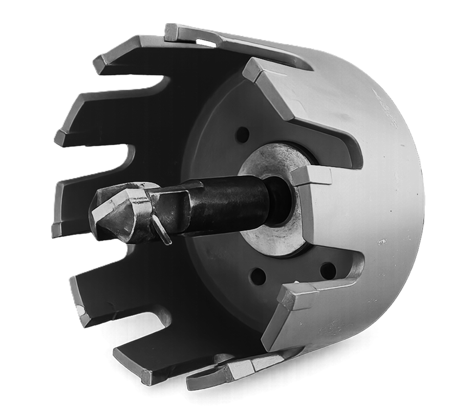
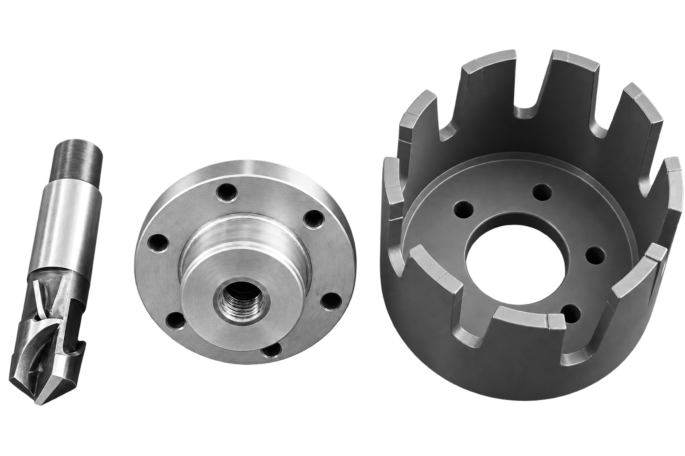
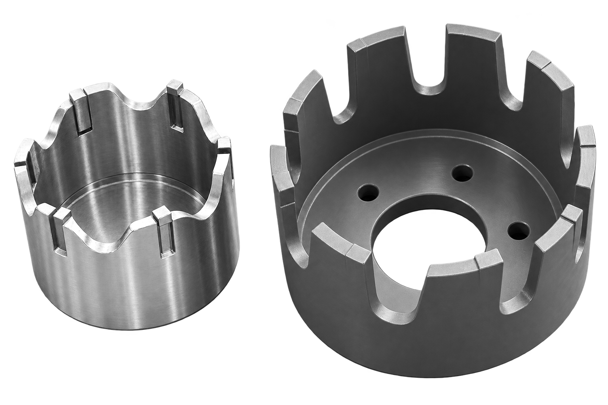

Annular Cutters for T.D. Williamson & TDW-Pattern Machines
Cutters
Annular cutters (hole-saw type) manufactured to fit T.D. Williamson hot tapping & isolation machines.
One brand is not the limit. We manufacture the same tooling for any TDW-pattern tapping machine, and for hot tapping machines of other makes — including our own UKhV equipment. Tell us the machine and the branch size, or send a drawing, and we produce the cutter to suit: cutter diameter, pilot drill, adapter thread or backing plate, and the coupon-retention arrangement.
They cut the branch outlet through the pipe wall on live, pressurized pipelines without interrupting flow, retaining the cut-out coupon.
Contact us

